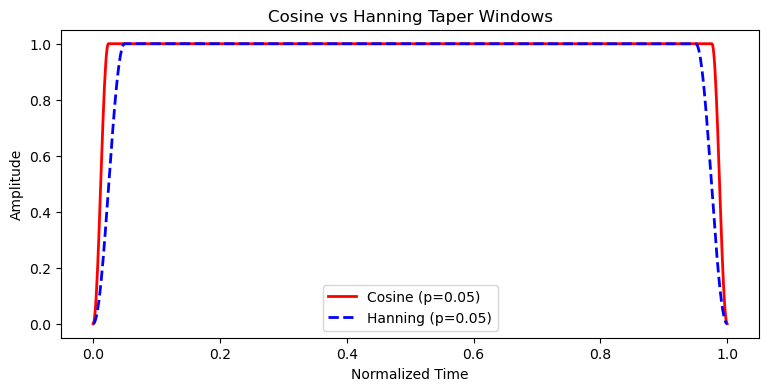
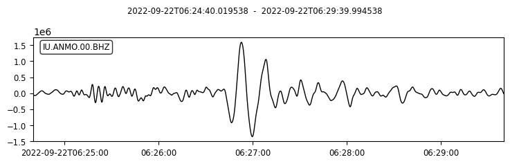
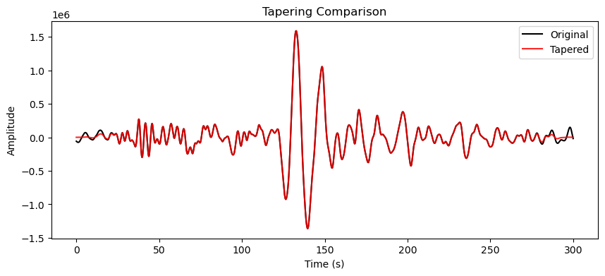

波形尖灭#
波形尖灭是指在信号首尾施加平滑衰减窗函数，使振幅在两端平滑过渡至零，从而减少因信号截断引起的频谱泄漏。
设原始信号为 \(x(j)\)、窗函数为 \(w(j)\)，则尖灭后的信号可表示为：
\[
x'(j) = w(j)*x(j),
\]
其中 \(w(j)\) 在信号首尾逐渐从 0 过渡到 1，并在中间区域保持为 1，实现波形的尖灭。
下图比较了两种常用的尖灭窗：余弦窗 (cosine) 与 Hanning 窗 (hann)。本示例中，两端各 5% 长度用于平滑渐入/渐出，中间部分保持幅度 1。

我们以前一节使用的 2022 年 9 月 22 日墨西哥 Mw 6.8 地震在 ANMO 台站的波形为例。
from obspy import UTCDateTime
from obspy.clients.fdsn import Client
import matplotlib.pyplot as plt
client = Client("IRIS")
# 下载 2022 年墨西哥 Mw 6.8 级地震在 ANMO 台站的波形数据(选择 400–700 s 时间窗)
origin_time = UTCDateTime("2022-09-22T06:18:00")
starttime = origin_time + 400
endtime = origin_time + 700
st = client.get_waveforms(
network="IU",
station="ANMO",
location="00",
channel="BHZ",
starttime=starttime,
endtime=endtime,
)
st.plot();

进行尖灭处理之前，通常先进行去均值、去线性趋势。
tr = st[0]
# 去均值 + 去趋势
tr.detrend("demean")
tr.detrend("linear")
tr_origin = tr.copy() # 备份原始波形
波形尖灭可使用 ObsPy 的 obspy.core.trace.Trace.taper() 实现。
在实际数据处理中，常使用 5% 的 Hanning 窗（taper 中的 type 参数默认即为 hann）。
本例中为了使尖灭的效果更明显，使用 10% 的 Hanning 窗（max_percentage=0.1）：
tr.taper(max_percentage=0.1, type="hann")
IU.ANMO.00.BHZ | 2022-09-22T06:24:40.019538Z - 2022-09-22T06:29:39.994538Z | 40.0 Hz, 12000 samples
下图演示了尖灭操作的效果：黑色和红色分别为尖灭操作前后的波形。可以看到，原始波形（黑） 在截断处存在“硬边界”，而尖灭后（红）两端平滑过渡至零，能有效抑制频谱泄漏。
plt.figure(figsize = (10, 4))
plt.plot(tr_origin.times(), tr_origin.data, 'k-', label='Original')
plt.plot(tr.times(), tr.data, 'r-', label='Tapered', alpha=0.85)
plt.xlabel('Time (s)')
plt.ylabel('Amplitude')
plt.title('Tapering Comparison')
plt.legend()
plt.show()
